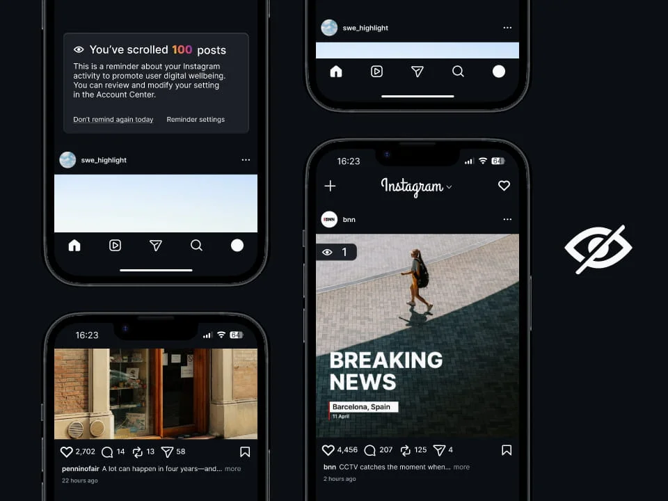
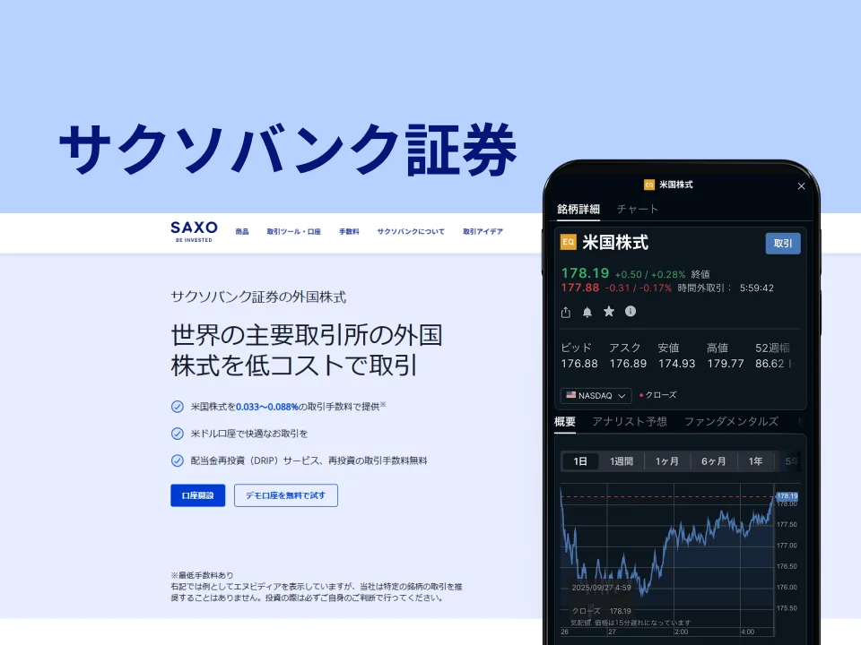
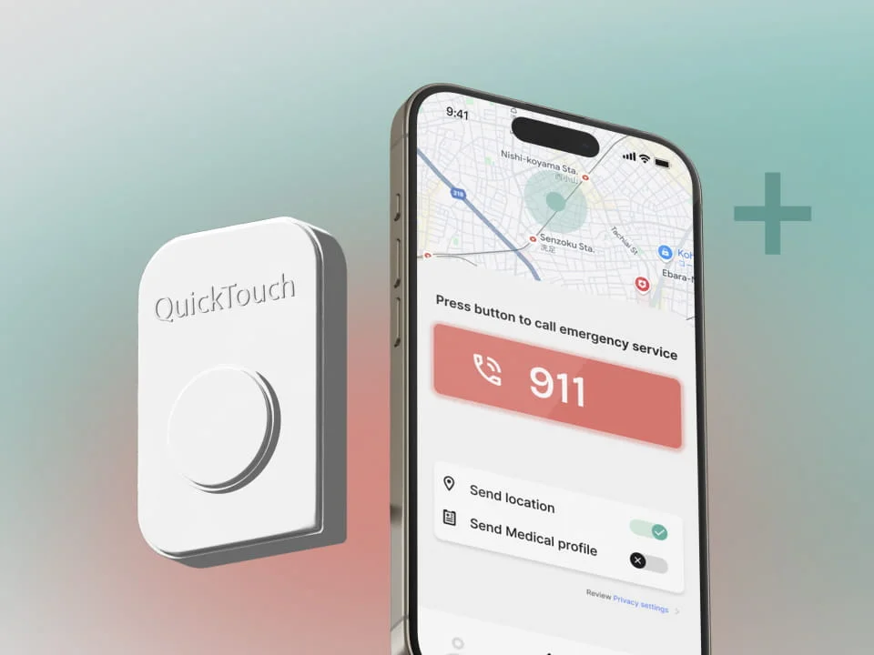
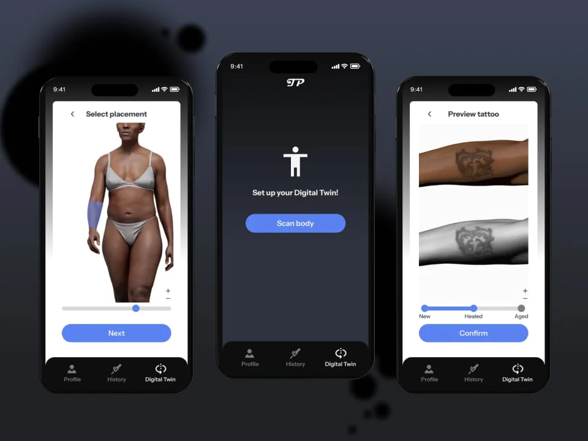

Case studies and projects
These case studies and projects show how I approach design: from understanding the problem and exploring solutions to validating decisions and reflecting on the outcome.
5 projects

Improving discoverability in IKEA's membership journey
An independent UX case study exploring how information architecture and interaction design can reduce friction during a time-sensitive checkout experience.

Supporting perceived agency in attention-driven social media design
A UX research project exploring how interaction design can help users with ADHD recognise and interrupt attention-capturing patterns on Instagram: using a Nudging strategy.

Web Design and Digital Experience at Saxo Bank Japan
Design work as the Web Designer for Saxo Bank Securities Ltd. in Tokyo, covering Web Design and implementation, UX/UI uplifts, design for digital client communication and digital marketing.

QuickLarm
Exploring possible experiences and services to create an interactive digital prototype of a design concept within the following problem area: Digital tools for saving seconds in rescue operations.

TattooPrototype
TattooPrototype is a mobile app that helps tattoo artists plan and design stencils with precision, using 3D scanning and digital twin technology for accurate measurements.
No projects in this category yet.
Try a different filter.